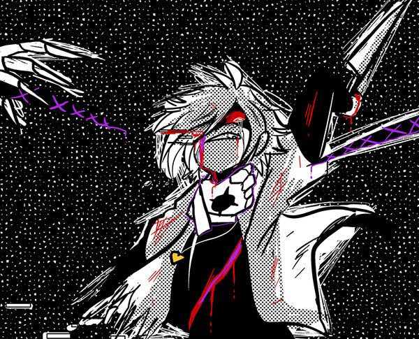

chara
Chara, uma das duas crianças que esteve desde do inicio de tudo jundo com gaster passando por aquelas modificações de gaster varias e varias vezes,
chara odiava os resets de gaster por ter que passar,conviver e se relacionar varias e varias vezes com as mesmas pessoas sem elas saberem de nada depois de tudo
um dia chara estava cançado dessas coisas que gaster fazia então um dia resolveu roubar metade dos poderes de gaster com seu irmão frisk

poderes
- resetar
- sobscrever